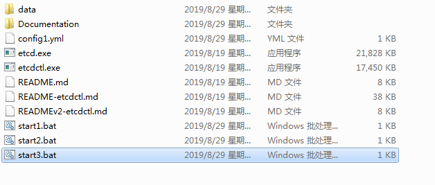
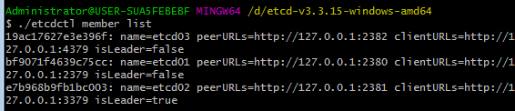
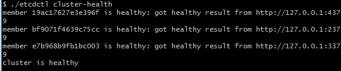
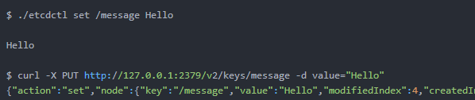
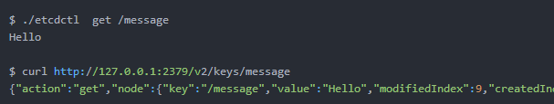
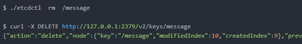
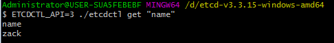

etcd 安装和配置
下载etcd release版本：https://github.com/coreos/etcd/releases/
我的是windows版本，下载win64的就行了，下载后进入文件夹，建立几个配置文件启动就行了，可以写yml文件，我是windows的就做成了bat命令。
一般是一个节点对应一个配置，一个节点的配置如下
yml文件版本
1 | name: etcd-1 |
各参数含义:
1 | etcd 命令含义 |
当然我的是windows版本，那么我就写bat文件就行了，我建立了三个bat文件对应三个节点。
start1.bat
1 | .\etcd.exe --name etcd01 ^ |
start2.bat
1 | .\etcd.exe --name etcd02 ^ |
start3.bat
1 | .\etcd.exe --name etcd03 ^ |
这三个bat文件放在之前etcd解压的文件夹里，我的目录结构如下

接下来分别启动弄三个bat文件，然后在终端输入
./etcdctl member list
查看节点和集群信息

如果是yml文件写的配置，可以通过
./etcd –config-file=/etc/etcd/conf.yml启动
/etc/etcd/conf.yml是yml文件所在路径。
目前节点和集群启动完毕。
etcd 常用命令
查询集群信息
查看集群状态

存储数据

读取数据

删除数据

etcd api分为2.0版本和3.0版本
使用3.0版本api需要在命令前加ETCDCTL_API=3

golang 访问etcd集群
golang 安装etcd包
1 | go get go.etcd.io/etcd/clientv3 |
大部分会失败，去github克隆吧
1 | git clone https://github.com/etcd-io/etcd |
接下来编码
1 | package main |
谢谢关注我的公众号